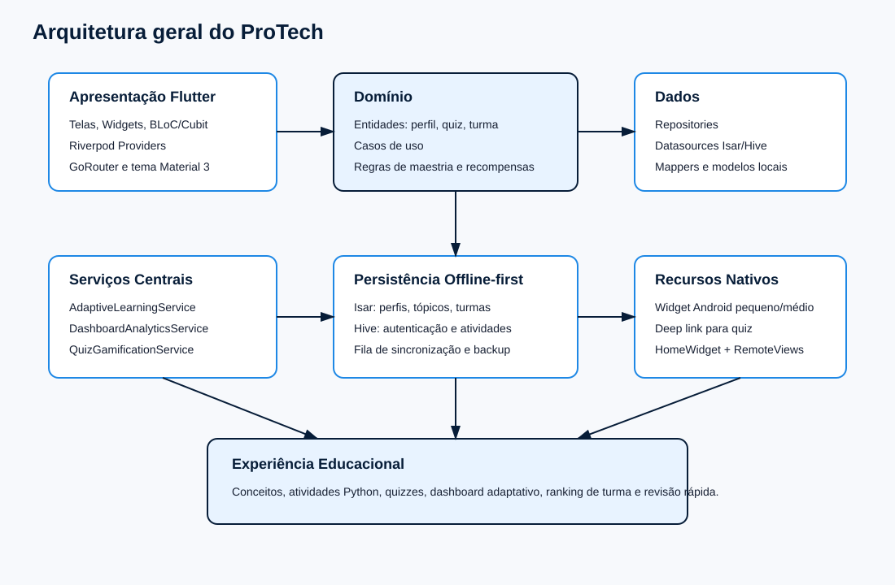
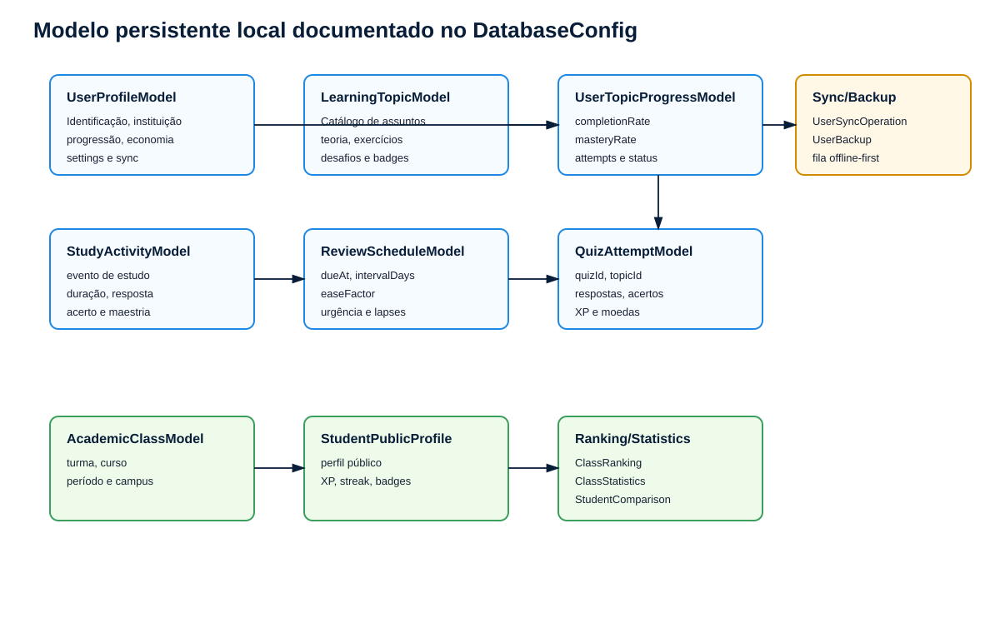
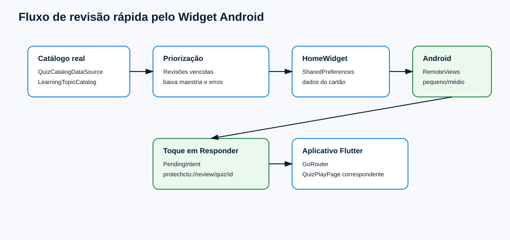

O ProTech é um aplicativo Flutter voltado ao apoio do aprendizado de programação, com foco em conceitos fundamentais de Python, atividades práticas, quizzes, gamificação, acompanhamento de progresso e revisão rápida por widget Android. A análise deste relatório foi realizada exclusivamente a partir do código-fonte presente no projeto, considerando arquivos Dart, estrutura Android, providers, repositories, entidades, banco local, testes e serviços implementados.
A aplicação apresenta escopo acadêmico relevante por atuar em uma dificuldade recorrente em cursos de tecnologia: a consolidação de lógica de programação, variáveis, estruturas condicionais, laços, funções, listas, tratamento de exceções, escopo e depuração. Além do conteúdo didático, o projeto demonstra iniciativa técnica por incorporar persistência offline-first, banco local Isar, Hive, Riverpod, BLoC, sistema de gamificação, revisão espaçada, ranking de turma e widgets nativos Android.
O objetivo geral do ProTech é oferecer uma experiência de aprendizagem de programação com acompanhamento individual, prática guiada, avaliação por quizzes e estímulo contínuo por gamificação.
Entre os objetivos específicos observados no código estão: disponibilizar conceitos didáticos; executar exercícios práticos em ambiente local controlado; registrar progresso do estudante; calcular maestria e recomendações; recompensar desempenho por XP, moedas, níveis e streak; organizar dados de turma; gerar ranking; apoiar revisão por widget Android; e manter dados localmente para uso offline.
A fundamentação do projeto pode ser associada a quatro eixos principais: aprendizagem ativa, gamificação educacional, aprendizagem adaptativa e computação móvel offline-first. A aprendizagem ativa aparece nas atividades práticas com código Python e checkpoints de entendimento. A gamificação aparece na atribuição de XP, moedas, níveis, streak e conquistas. A aprendizagem adaptativa está presente no cálculo de maestria, dificuldade percebida e revisão espaçada. A abordagem offline-first é materializada pela persistência local em Hive e Isar, com fila de sincronização futura.
No contexto de desenvolvimento móvel, o projeto utiliza Flutter para interface multiplataforma, GoRouter para navegação, BLoC/Cubit e Riverpod para gerenciamento de estado, além de integração nativa Android por meio de AppWidgetProvider e HomeWidget.
A documentação foi elaborada por inspeção estática do repositório. Foram examinados arquivos Dart do diretório lib, testes automatizados em test, configuração de dependências em pubspec.yaml, recursos Android em android/app/src/main e histórico Git. Não foram atribuídas funcionalidades ausentes no código. Quando uma estrutura existe apenas como preparação para integração futura, ela é descrita como capacidade arquitetural ou ponto de extensão, e não como funcionalidade final de produção.
A análise identificou cerca de 140 arquivos relevantes entre código Flutter, testes e recursos Android. Foram localizadas entidades de domínio, modelos Isar, data sources, repositories, providers Riverpod, cubits BLoC, telas, serviços de gamificação, serviços adaptativos, serviços de backup, serviços de sincronização, widget Android e testes.
O projeto utiliza Flutter e Dart como base de desenvolvimento. A interface segue Material 3 com tema escuro azul. Para navegação, utiliza go_router. Para gerenciamento de estado, coexistem flutter_bloc e flutter_riverpod. Para persistência local, são utilizados Hive, Hive Flutter, Isar Community, Shared Preferences e Path Provider. Para recursos nativos de tela inicial, utiliza home_widget. Para segurança de credenciais, o projeto utiliza crypto. Para geração de identificadores, utiliza uuid.
No Android nativo, o projeto possui AppWidgetProvider em Kotlin, recursos XML de layout, drawables e metadados de widgets. O build Android inclui resolução forçada de androidx.glance:glance-appwidget:1.1.1 para compatibilidade com o Android Gradle Plugin utilizado.
A arquitetura observada se aproxima de Clean Architecture em vários módulos. Há separação entre camada de domínio, camada de dados e camada de apresentação, principalmente nas features user, quiz e classes. A camada de domínio contém entidades, interfaces de repositories e casos de uso. A camada de dados contém models, datasources, mappers e implementations de repositories. A camada de apresentação contém pages, widgets, cubits e providers.
A feature user é a mais completa em termos arquiteturais, contendo entidades, use cases, repositories, datasources, mappers, models Isar e providers. A feature quiz segue o mesmo padrão, com catálogo, datasource local de tentativas, repository, entidade e provider. A feature classes também apresenta entidades, services, repository, datasource, mapper e providers.
Algumas features mais simples, como concepts e activities, ainda usam repositories locais em memória ou Hive, sem a mesma profundidade de camadas. Isso é aceitável para escopo acadêmico, mas indica oportunidade de padronização arquitetural.

O fluxo geral parte da interface Flutter, que aciona Cubits ou Providers. Esses componentes acessam use cases ou repositories. Os repositories coordenam datasources locais, serviços de domínio e mappers. Os dados são persistidos em Isar ou Hive, e retornam para a interface como entidades de domínio ou snapshots analíticos.
No dashboard adaptativo, por exemplo, a interface TeachingDashboardPage usa FutureProvider para obter GetLearningDashboard. O caso de uso aciona LearningDashboardRepositoryImpl, que consulta tópicos, progresso, atividades, revisões e metas no Isar, além de perfil do usuário. Em seguida, DashboardAnalyticsService produz LearningDashboardSnapshot com progresso geral, recomendações, revisões do dia, assuntos fortes/fracos, milestones, heatmap e estimativa de conclusão.
O banco local principal é Isar Community, configurado em DatabaseConfig. As coleções registradas são: UserProfileModel, UserSyncOperationModel, UserBackupModel, LearningTopicModel, UserTopicProgressModel, StudyActivityModel, ReviewScheduleModel, LearningGoalModel, QuizAttemptModel, AcademicClassModel, StudentPublicProfileModel, ClassRankingModel, ClassStatisticsModel e StudentComparisonModel.
Além do Isar, o projeto utiliza Hive para autenticação e conclusão simples de atividades práticas. SharedPreferences é utilizado como apoio para cache e dados de widget Android via HomeWidget.
A presença de UserSyncOperationModel e UserBackupModel indica uma estratégia offline-first, com fila de operações pendentes e snapshots de backup antes de alterações ou migrações. O UserRemoteDataSource está definido como interface, e o provider remoto atual retorna null, o que caracteriza a sincronização remota como ponto de extensão ainda não ativado.

| Coleção/Modelo | Finalidade |
|---|---|
| UserProfileModel | Perfil completo, progressão, economia, estatísticas e preferências |
| UserSyncOperationModel | Fila de operações pendentes para sincronização futura |
| UserBackupModel | Snapshots locais para restauração |
| LearningTopicModel | Catálogo de assuntos, teoria, exercícios, desafios e badges |
| UserTopicProgressModel | Progresso, maestria, tentativas, acertos e status por tópico |
| StudyActivityModel | Eventos de estudo com duração, resposta e acerto |
| ReviewScheduleModel | Agenda de revisão espaçada |
| LearningGoalModel | Metas de aprendizagem |
| QuizAttemptModel | Tentativas de quiz, respostas, XP e moedas |
| AcademicClassModel | Dados de turma |
| StudentPublicProfileModel | Perfil público para ranking |
| ClassRankingModel | Ranking calculado da turma |
| ClassStatisticsModel | Médias e indicadores coletivos |
| StudentComparisonModel | Comparações entre estudantes |
A seguir são documentadas as funcionalidades encontradas no código-fonte. Cada item foi identificado em arquivos concretos do projeto e não depende de suposições externas.
| Funcionalidade | Implementação observada | Tecnologias/recursos |
|---|---|---|
| Autenticação local | AuthRepository, AuthModel, AuthCubit | Hive, crypto, BLoC |
| Conceitos didáticos | ConceptsRepository, ConceptsPage, ConceptDetailPage | Flutter, GoRouter, BLoC |
| Atividades práticas | ActivitiesRepository, ActivityEditorPage | Flutter, Hive |
| Executor Python | PythonExerciseRunner | Dart puro |
| Quiz gamificado | QuizCatalogDataSource, QuizPlayPage | Riverpod, Isar |
| Gamificação | QuizGamificationService | XP, moedas, nível, streak |
| Dashboard adaptativo | TeachingDashboardPage, DashboardAnalyticsService | Riverpod, Isar |
| Aprendizagem adaptativa | AdaptiveLearningService | Maestria e revisão espaçada |
| Turmas e ranking | ClassPage, ClassAnalyticsService | Isar, Riverpod |
| Offline-first | DatabaseConfig, UserSyncOperationModel | Isar, backup, fila de sync |
| Widget Android | HomeWidgetReviewService, ProTechReviewWidgetProvider | home_widget, Kotlin, RemoteViews |
Objetivo: permitir cadastro e login de estudantes. Funcionamento: AuthRepository armazena usuários em Hive, AuthModel aplica hash de senha com crypto e AuthCubit coordena os estados de login/cadastro. Tecnologias: Hive, crypto, flutter_bloc. Benefícios ao usuário: entrada simples e persistência de sessão. Benefícios acadêmicos: demonstra preocupação com segurança básica ao evitar senha em texto puro.
Objetivo: coletar preferências iniciais do estudante. Funcionamento: QuestionsPage apresenta perguntas por DropdownButtonFormField e QuestionsCubit salva respostas usando AuthRepository. Tecnologias: Flutter, BLoC e Hive. Benefícios: personalização inicial. Valor acadêmico: evidencia preocupação com perfil do estudante, embora ainda possa ser mais integrado ao algoritmo adaptativo.
Objetivo: apresentar conteúdo teórico de programação. Funcionamento: ConceptsRepository fornece conceitos, ConceptsPage lista assuntos e ConceptDetailPage mostra objetivos, explicação, exemplo Python, passos guiados e checkpoint. Tecnologias: Flutter, BLoC, GoRouter. Benefícios: consulta estruturada de conteúdo. Valor acadêmico: apoia aprendizagem conceitual antes da prática.
Objetivo: permitir prática guiada de programação dentro do app. Funcionamento: ActivitiesRepository contém atividades reais com objetivo, enunciado, etapas, exemplo, código inicial, dicas e critérios. ActivityEditorPage usa PythonExerciseRunner para interpretar subconjunto de Python com entrada, print, variáveis, listas, tuplas, if/elif/else, for, funções, return e tratamento de ValueError. Tecnologias: Flutter, Hive e interpretador didático implementado em Dart. Benefícios: prática sem depender de ambiente externo. Valor acadêmico: recurso avançado e fortemente alinhado ao ensino de programação.
Objetivo: avaliar conhecimento por perguntas objetivas. Funcionamento: QuizCatalogDataSource contém quizzes com tópico, dificuldade, XP, moedas, bônus e perguntas com alternativas. QuizPlayPage coleta respostas e QuizRepositoryImpl calcula acertos, persiste tentativa e atualiza perfil gamificado. Tecnologias: Riverpod, Isar, uuid, gamificação. Benefícios: feedback e recompensa. Valor acadêmico: fornece avaliação formativa com registro de desempenho.
Objetivo: aumentar engajamento. Funcionamento: QuizGamificationService cria perfil inicial e aplica recompensas por quiz, calculando XP, moedas, nível, streak, estatísticas e conquistas por quiz perfeito. Tecnologias: entidades de domínio e Isar. Benefícios: motivação contínua. Valor acadêmico: aplica estratégias de gamificação em contexto educacional real.
Objetivo: consolidar progresso e orientar estudo. Funcionamento: TeachingDashboardPage exibe resumo do aluno, tópicos, desempenho geral, continuar estudando, progresso geral e ações rápidas. DashboardAnalyticsService calcula progresso, recomendações, revisões, assuntos fortes/fracos, milestones, heatmap e previsão de conclusão. Tecnologias: Riverpod, Isar e serviços de domínio. Benefícios: acompanhamento individual. Valor acadêmico: demonstra uso de análise de dados educacionais.
Objetivo: adaptar o estudo ao desempenho. Funcionamento: AdaptiveLearningService atualiza completionRate, masteryRate, tentativas, acertos, dificuldade percebida, badges e ReviewSchedule. O algoritmo agenda revisão com easeFactor, repetitions, lapses e urgência. Tecnologias: Dart puro, entidades de domínio e Isar. Benefícios: priorização de estudo. Valor acadêmico: recurso de alto impacto por aplicar lógica adaptativa e revisão espaçada.
Objetivo: organizar desempenho coletivo. Funcionamento: classes possui ClassEntity, StudentPublicProfileEntity, ClassRankingEntity, ClassStatisticsEntity e StudentComparisonEntity. ClassAnalyticsService calcula ranking e estatísticas; ClassPage apresenta turma, ranking e colegas. Tecnologias: Riverpod, Isar e serviços de domínio. Benefícios: comparação saudável e visão coletiva. Valor acadêmico: aproxima o app de uso em disciplina real.
Objetivo: manter funcionamento local e preparar sincronização futura. Funcionamento: Isar armazena perfis, progresso, revisões, metas, tentativas de quiz e turmas. UserSyncOperationModel registra operações pendentes. UserBackupService cria snapshots antes de atualizações e migrações. UserSyncService existe para enviar operações a um UserRemoteDataSource, porém o provider remoto atual retorna null. Tecnologias: Isar, SharedPreferences e repositories. Benefícios: confiabilidade local. Valor acadêmico: demonstra arquitetura robusta.
Objetivo: permitir microaprendizagem sem abrir manualmente o app. Funcionamento: HomeWidgetReviewService seleciona perguntas reais do catálogo de quizzes e prioriza revisão vencida, tópico fraco, erro recente, baixa maestria e rotação diária. Os dados são salvos via HomeWidget e renderizados por QuickReviewSmallWidgetProvider e QuickReviewMediumWidgetProvider em Kotlin/RemoteViews. O toque no botão Responder abre deep link para o quiz. Tecnologias: home_widget, Kotlin, AppWidgetProvider, Android XML, GoRouter. Benefícios: engajamento diário. Valor acadêmico: recurso nativo avançado que demonstra iniciativa além do conteúdo básico.

Objetivo: validar regras essenciais. Funcionamento: test/widget_test.dart cobre credenciais sem senha em texto puro, recompensas de quiz, executor Python, bloqueio de comandos externos, catálogo adaptativo, analytics de turma e navegação/telas de atividades. Tecnologias: flutter_test, testes unitários e widget tests. Benefícios: segurança contra regressão. Valor acadêmico: melhora robustez e demonstra maturidade de engenharia.
O projeto utiliza Riverpod principalmente nos módulos user, quiz e classes. Em user_providers.dart, há providers para SharedPreferencesAsync, DatabaseService, UserCacheService, UserBackupService, migração, datasources, repositories, use cases, sincronização, streams de perfil e dashboard. Em quiz_providers.dart, há providers para catálogo, gamificação, datasource local, repository, quizzes, quiz específico, perfil do aprendiz e tentativas. Em class_providers.dart, há providers para repository de turma, perfil público, ranking, estatísticas, colegas e turma atual.
Os casos de uso em user/domain/usecases encapsulam ações como obter perfil, salvar perfil, observar perfil, excluir perfil, restaurar backup, obter dashboard, observar dashboard, registrar atividade, salvar meta e salvar catálogo de tópicos. Essa camada aumenta a clareza do domínio e facilita testes e manutenção.
A interface utiliza tema escuro azul, Material 3, cards com bordas de 8dp, botões padronizados e ícones Material. A navegação é feita por GoRouter. As principais telas são splash, triagem, autenticação, perguntas, dashboard, conceitos, detalhe de conceito, atividades, editor de atividade, quiz hub, quiz play, perfil, estudante e turma.
O dashboard mostra métricas essenciais: nível, XP, moedas, streak, tópicos, progresso, desempenho e ações rápidas. O quiz apresenta cabeçalho de gamificação, lista de desafios e tela de resultado com XP, moedas, nível, streak e correções.
Foram observadas limitações de experiência: ausência de navegação principal persistente, muitas telas em listas verticais longas, recursos calculados no domínio pouco destacados na interface e textos com encoding quebrado em vários pontos do código-fonte, especialmente em palavras acentuadas de telas e mensagens. Essas limitações não anulam a funcionalidade, mas reduzem o acabamento profissional.
Os principais diferenciais acadêmicos identificados são: executor Python local seguro, widget Android de revisão rápida, aprendizagem adaptativa, revisão espaçada, dashboard analítico, gamificação, ranking de turmas, persistência offline-first, fila de sincronização, backup local, uso simultâneo de Riverpod e BLoC, e modelagem rica de domínio.
O widget Android e o executor Python são os diferenciais mais fortes por exigirem integração além da construção comum de telas. O sistema adaptativo e o ranking elevam a proposta de um simples app de conteúdo para uma plataforma de acompanhamento educacional.
A autoria foi analisada com base no histórico Git disponível. Foram encontrados commits associados a SergioRobert0, Sérgio Roberto de Oliveira Loyola, FranciscoLuanMLima, llualima673-hash e outros identificadores relacionados. Como nem todos os commits detalham autoria por arquivo e parte do desenvolvimento ocorreu por mensagens genéricas, a divisão abaixo combina evidências de commits com uma separação técnica plausível baseada nos módulos existentes.
Sérgio Roberto de Oliveira Loyola aparece em commits como 'Subindo arquivos', 'Fiz algumas alterações', 'Reorganiza dashboard do aluno' e 'Add Android quick review home widgets'. Assim, sua participação é associada à arquitetura Flutter geral, reorganização do dashboard, integração do widget Android, navegação, integração de serviços e acabamento funcional recente.
Luan, identificado no histórico como FranciscoLuanMLima e llualima673-hash, aparece em commits como 'prototipo inicial', 'Modificando o gitignore', 'Corrige fluxos, seguranca e textos da experiencia', 'Registra dependencia crypto no lockfile' e 'Adiciona executor didatico de Python nas atividades'. Sua participação é associada à prototipação inicial, ajustes de fluxo, segurança de autenticação, executor didático Python, conteúdos práticos, testes e organização de base do projeto.
A divisão técnica plausível é: Sérgio: arquitetura Flutter, dashboard, gamificação, sistema adaptativo, widget Android e integração visual. Luan: banco local e modelagem, conteúdos de conceitos/atividades/quizzes, executor Python, segurança de autenticação, testes e integrações de base. Essa divisão é coerente com os commits e com a organização modular encontrada.
O projeto resultante é um aplicativo educacional funcional, com base local, gamificação, conteúdos didáticos, quizzes, atividades práticas, dashboard e widget Android. O build Android debug foi validado com JDK 21 e Gradle após fixação da dependência androidx.glance:glance-appwidget:1.1.1.
Os testes existentes demonstram preocupação com segurança, funcionamento do executor Python, evolução do catálogo, analytics de turma e navegação. O sistema já possui elementos suficientes para apresentação acadêmica robusta, especialmente por combinar educação, análise de desempenho e recursos nativos.
Foram identificadas limitações importantes: textos com encoding quebrado; ausência de Firebase real ou backend ativo; UserRemoteDataSource ainda não conectado a serviço remoto; notificações não implementadas; conclusão das atividades práticas baseada em autoavaliação, sem correção automática completa; interface com navegação principal limitada; painel de turma ainda mais voltado ao aluno do que ao professor; e recursos de acessibilidade modelados, mas pouco aplicados na interface.
Essas limitações são oportunidades claras de evolução e devem ser tratadas antes de uma banca final caso o objetivo seja maximizar percepção de qualidade e robustez.
O ProTech apresenta uma proposta acadêmica consistente e tecnicamente relevante. O código-fonte demonstra domínio de Flutter, persistência local, arquitetura modular, gamificação, análise adaptativa, execução didática de código Python e integração nativa Android. O projeto supera o nível de um aplicativo CRUD simples e se aproxima de uma plataforma de aprendizagem com acompanhamento individual e coletivo.
Para evolução futura, recomenda-se corrigir encoding textual, integrar mais fortemente o fluxo conceito-atividade-quiz-revisão, criar correção automática de atividades, expor melhor as recomendações adaptativas na interface, implementar notificações locais e conectar o UserRemoteDataSource a um backend real, como Firebase. Mesmo com essas limitações, o ProTech já possui diferenciais acadêmicos expressivos para apresentação universitária.
ASSOCIAÇÃO BRASILEIRA DE NORMAS TÉCNICAS. NBR 14724: Informação e documentação: trabalhos acadêmicos: apresentação. Rio de Janeiro: ABNT, 2011.
ASSOCIAÇÃO BRASILEIRA DE NORMAS TÉCNICAS. NBR 6023: Informação e documentação: referências: elaboração. Rio de Janeiro: ABNT, 2018.
FLUTTER. Flutter documentation. Disponível em: https://docs.flutter.dev/. Acesso em: 11 jun. 2026.
DART. Dart documentation. Disponível em: https://dart.dev/guides. Acesso em: 11 jun. 2026.
GOOGLE. Android App Widgets overview. Disponível em: https://developer.android.com/develop/ui/views/appwidgets. Acesso em: 11 jun. 2026.
ISAR COMMUNITY. Isar Community database documentation. Disponível em: https://pub.dev/packages/isar_community. Acesso em: 11 jun. 2026.
RIVERPOD. Riverpod documentation. Disponível em: https://riverpod.dev/. Acesso em: 11 jun. 2026.
BLOC LIBRARY. bloc state management documentation. Disponível em: https://bloclibrary.dev/. Acesso em: 11 jun. 2026.